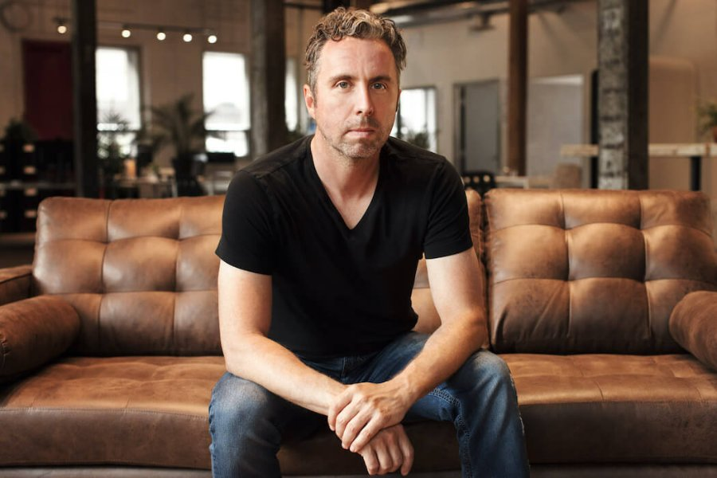

← Back to the founder directory

Frederic Lalonde
A self-taught coder who left school at 19, sold his first travel company to Expedia, and then built Hopper, the app that uses data to tell travellers when to book.
- Grew up
- Quebec City, Canada
- Country
- Canada
- Known for
- Hopper, Deep Sky
- Role
- Co-founder and CEO of Hopper
Early life
Frederic Lalonde grew up mostly in Quebec City. His father was a biologist and university professor who loved computers and brought home advanced machines, so Fred was teaching himself to code by about age 12. He describes himself as one of the "early hacker kids". At 19 he left school to become an entrepreneur and never went on to higher education.
First ventures: Travel Online and Newtrade
In 1993 he moved to Los Angeles to start Travel Online, an early online airfare-ticketing company. Funding was hard to find, and in 1997 he returned to Montreal. There he co-founded Newtrade Technologies with Benoit Jolin and served as executive vice president and chief technology officer. Newtrade built software that connected hotel reservation systems with online distribution channels, replacing slow manual processes. Expedia acquired the company in October 2002.
Years at Expedia
After the acquisition, Lalonde stayed on as a vice president, first for hotel supplier strategy and then for hotels and packages product planning. He helped lead Expedia's Direct Connect strategy, which brought more than 10,000 hotels, including major chains such as Marriott and Hilton, onto the platform. He was also involved in deals that included Hotels.com and TripAdvisor.
Founding Hopper
In 2007 he left Expedia and co-founded Hopper in Montreal with Joost Ouwerkerk, a former Expedia colleague. The company started by collecting travel content from blogs and websites, then moved towards a data-driven model built on predicting airfares. Hopper crawled huge amounts of travel data and used machine learning to forecast prices, so it could tell users whether to buy now or wait.
Going mobile-first
Hopper launched its iOS and Android apps in 2015 and became a mobile-first company. It soon added hotels and, over time, financial products such as Price Freeze and flexible cancellation options. It opened a Boston office in 2012 and by 2019 operated in 126 countries, with over 35 million installs and 90 million trips helped. It had raised about US$235 million by then and passed US$1 billion in annual sales, according to BDC. In 2021 it raised a further US$175 million and bought the activities company PlacePass, which helped build its business-to-business arm, Hopper Cloud. The company says its app has been downloaded more than 100 million times, and Fast Company named Hopper its Most Innovative Company in Travel for 2022.
Climate work and boards
In January 2020, Hopper launched Hopper Trees, which funds tree planting for every booking made through the app. In September 2022, Lalonde co-founded Deep Sky in Montreal with Joost Ouwerkerk and former Airbnb CFO Laurence Tosi, and he is its chairman. Deep Sky develops carbon-removal projects, working with technology partners to pull carbon dioxide from the air and store it underground.
He has also served on the boards of the Indian travel companies MakeMyTrip and Ixigo, and he chairs the Quebec mentoring organisation Reseau Mentorat.
Timeline
- 1993Moves to Los Angeles and starts the online ticketing company Travel Online.
- 1997Returns to Montreal and co-founds Newtrade Technologies.
- 2002Expedia acquires Newtrade; he joins Expedia as a vice president.
- 2007Co-founds Hopper with Joost Ouwerkerk.
- 2015Hopper launches its iOS and Android apps.
- 2019Hopper reaches 126 countries and over 35 million installs.
- 2020Launches Hopper Trees in January.
- 2021Hopper raises US$175 million and acquires PlacePass.
- 2022Co-founds Deep Sky in September; Hopper wins Fast Company's travel innovation title.
Recognition
- Hopper named Fast Company's Most Innovative Company in Travel (2022)
- Hopper ranked the number one travel app in more than 55 countries, according to its CEO profile
Leadership lessons
- Learn by doing. Lalonde taught himself to code and left school to start building.
- Use data as your edge. Hopper's predictions grew from the huge amount of travel data it collected.
- Be ready to change direction. Hopper moved from blog content to price prediction, and then to mobile only.
- Carry experience forward. His years at Expedia shaped how he built Hopper.
Sources
Written from public information, including Wikipedia, Grokipedia and Highperformr. The sources differ on some details, such as where he was born and which of his board roles are current, so Wikipedia is followed where they differ. Several figures are company-reported rather than confirmed. Net worth and valuation estimates are left out because they conflict.